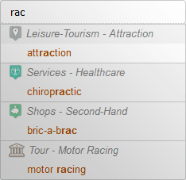
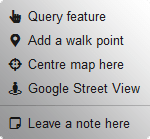
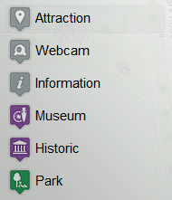
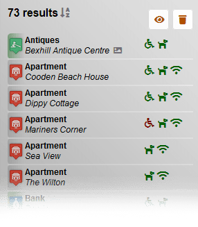
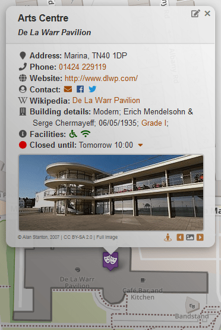
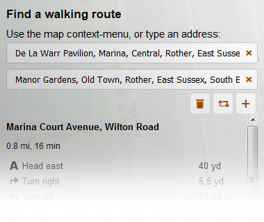

Walking the Way to Health (0.7mi / 1km)
The Motor Trail (1.3mi / 2km)
Little Common to Highwoods (1.6mi / 2.6km)
Bexhill to Hastings Greenway (2.6mi / 4.5km)
1066 Country Walk (3.0mi / 4.7km)
Bexhill Circular (6.3mi / 10.2km)
Search
Map Controls
Context-menu
Tabs
Points of Interest (POI)
Pop-ups
Walking Routes
Historic Tour



Results will be displayed as a scrollable list and on the map as markers. The buttons at the top allow you to clear the results, or zoom to their area on the map.


About & Contact
Links
Donate
Software
Bexhill-OSM is part of a community of mappers that want to create a free, editable map of the world. You can learn about the global project at the official OpenStreetMap website.
This independent website looks to continuously archive Bexhill as it stands today; heralding history, community and business in an informative, accessible form.
Although Bexhill-OSM is not a business directory as such, nor a place for direct advertising, we do welcome listings on all public visitable places.
info [at] bexhill-osm.org.uk
fb.com/bexhillosm
@bexhillosm
OpenStreetMap
- The map anyone can edit!
MAPS.ME
- Use the data from this map offline on your mobile.
F4Map
- A dynamic 3D version of this map.
Discover Bexhill-on-Sea
- Local visitor and tourist guide.
Bexhill Community
- Bexhill's Community Notice Board.
Bexhill Heritage
- Caring for Bexhill's past, present and future.
The Old Town Preservation Society
- Maps and information from past to present.
The Bexhill History Trail
- A guide to many of the historic gems.
Bexhill-OSM is self-funded in that it is completely advertisement and commercial free. If you so wish, you may support the project using the links below.
My Amazon Wish List |
| 1Po4ym9VFzYcDyykWM9TZGbxYnXjBgULRi |
The complete source code for Bexhill-OSM can be downloaded from GitHub. It also includes a change-log of continuing web developments.
Special thanks to the developers below, for without them this website would not be where it is today: